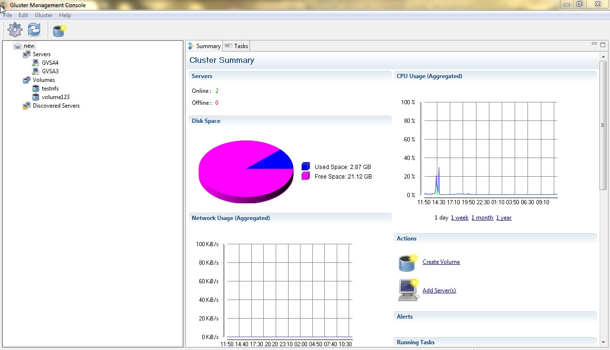

Monitoring Cluster Resources
Gluster Management Console enables you to monitor your cluster resources such as through Summary Tab.
You can monitor resources such as CPU usage, Alerts, Tasks, Network usage and so on.
To monitor resources in your cluster, perform the following steps.
- Select your resource at the node level. For example, choose your cluster. The Summary tab displays the historical graphical representations of your clusters key resources such as CPU, memory, network usage, and disk utilization by day, week, or month. In case of Network usage, the graph will be displayed for the selected network from the drop down list.
Note: At any point of time, the Summary tab will show views that are applicable to the resource selected from the navigation tree in the left pane.

- Click to expand other resource nodes such as Volume, Bricks, and Server to display the respective details, as required.